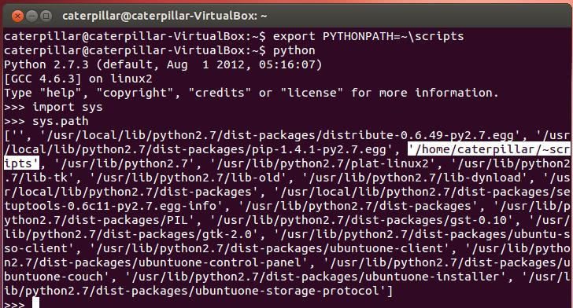
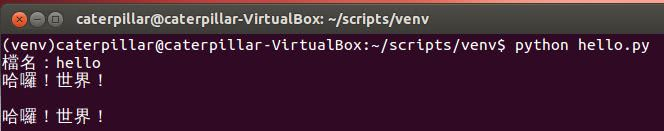

我們安裝了 Distribute、Pip 以及 Virtualenv，那這些東西安裝到哪裏去了？如果我們打算在程式碼中引用某個程式庫，那會是什麼搜尋路徑？Python 的
sys 模組（module）中有個 path 變數，參考了一個 list，當中記錄的 string，就是程式庫模組的搜尋路徑。 你可以設定環境變數
PYTHONPATH，這個資訊會新增在 Python 的模組搜尋路徑中。例如可在 Ubuntu 中如下設定，並進入 Python 互動交談環境中，使用 import sys 匯入 sys 模組，可看到 sys.path 中新增了 PYTHONPATH 設置的路徑： {kind=link}

Distutils、Distribute 與 Pip 間的關係
Distutils 是 Python 內建的標準程式庫，用以建立與安裝額外的模組，適用於簡易的安裝情境，詳細的說明文件，可以參考 Python 官方文件中 Distributing Python Modules 的說明，如果有人使用 distutils 建立了可安裝的模組，想安裝該模組的基本步驟就是下載並解壓縮之後，使用python 指令執行其中的 setup.py。例如下載 Django 某版本的 tar.gz 檔後，可以如下進行安裝：
$ tar xzvf Django-X.Y.Ztar.gz
$ cd Django-X.Y.Z
$ sudo python setup.py installSetuptools 則擴充了 distutils，是 Python 社群下載、安裝、昇級與移除套件（Package）事實上的標準（de facto standard），不過近來開發緩慢，程式碼混亂，因而後來有了 Distribute，意圖取代 setuptools，Distribute 擴充了 distutils，並提供了對 setuptools 的向後相容（Backward compatibility），先前依賴 setuptools 建立散佈的套件，也可以在 Distribute 中運行如昔。
（有網友看了這篇後 回饋，Distribute 回併至 setuptools 了, 以後只需用 setuptools，詳情可參考 Distribute Is Now Merged Back To Setuptools。）
無論是安裝 setuptools 或是 Distribute，都有
easy_install 可以使用，不過現在有許多人建議不要使用 easy_install，原因是其沒有可以反安裝的選項，只支援 SVN 等 ... Pip 也是用來安裝與管理 Python 模組，它提供了 easy_install 的替代品，可以進行套件的反安裝，而且目前專案的維護上還蠻活躍的，基本的安裝與反安裝指令為 pip install [PACKAGE_NAME]、pip uninstall [PACKAGE_NAME]。 安裝套件時，建議可以使用
pip，如果發現有 pip 無法安裝的套件，可以嘗試使用 easy_install，如果這兩個選項都無法安裝，則可以嘗試尋找是否有 setup.py 進行安裝。
使用 Virtualenv
Python 的套件不少都會直接安裝到 Python 預設的一些系統路徑中，像是在上面的圖片中可以看到，Pip 的 pip-1.4.1-py2.7.egg 就安裝到 /usr/local/lib/python2.7/dist-packages 之中，在初學 Python 的練習過程中，也許會安裝許多套件，如果不想都安裝到系統路徑中，或者不具備系統管理者權限而無法安裝到系統路徑，會希望有個虛擬環境可以使用，安裝 Pip 之後，通常會建議安裝 Virtualenv 做為搭配，也就是上一篇文章最後一個指令sudo pip install virtualenv 的目的。 Virtualenv 可以建立虛擬的 Python 環境，虛擬環境彼此之間互不干擾，也可避免搞亂 Python 主要安裝路徑，可以使用
virtualenv --distribute venv 來建立一個虛擬環境路徑，其中 venv 可以是任意的環境名稱，這會建立一個 venv 目錄，進入該目錄後，執行 source bin/activate 可以啟動虛擬環境，輸入 deactivate 可以關閉虛擬環境。
練習 2：哈囉！世界！
這個練習要來使用 Virtualenv 建立並啟用虛擬環境，於其中撰寫一個 Python 程式，可以提示使用者輸入檔名，然後讀取檔案並顯示在終端機中。首先依序輸入以下指令建立、進入並啟用虛擬環境，使用 gedit 編輯 hello.py：
$ virtualenv --distribute venv
$ cd venv
$ source bin/activate
$ gedit hello.py嗯？我們不是安裝了 Sublime Text 2 嗎？是沒錯，不過這個 hello.py 中要輸入中文，要讓前一篇文章中安裝的 Sublime Text 2 可以輸入中文，會是另一個故事了（顯示倒是沒問題），所以，這邊還是先使用一下 gedit 來如下編輯 Python 程式碼... XD
# coding=UTF-8
filename = raw_input('檔名：')
f = open(filename, 'r')
b_str = f.read()
f.close()
print b_str.decode('utf-8') # 這是什麼？
print b_str.decode('utf-8').encode('utf-8') # 這是什麼？編輯完成後存檔，這邊暫不解釋程式碼的細節，附帶一提，練習的程式碼成果，都可以在上一篇中，從 Github 下載的 PyConTW2013Tutorial 中取得，舉例來說，這個練習的成果，可以在其中的 labs/solutions/exercise2 中取得。接著，使用 gedit 編輯任何一個檔案，寫寫一些文字（中文英文都可以）之後存檔，我這邊存為 hello 檔案，裏頭寫著「哈囉！世界！」。 接著於終端機中執行
python hello.py，你應該可以如下進行操作並看到結果： {kind=link}

因為我個人不太相信顯示「Hello! World!」的程式碼越短，就代表該程式語言越容易的鬼話，因此你的第一個程式練習不光只是顯示「Hello! World!」，而是讀取檔案與顯示「哈囉！世界！」，第一個程式就可以正確地讀取檔案與顯示中文，是我個人的偏好，因為這涉及到基本的輸入輸出，也涉及到語言處理文字編碼的態度，這會讓入門的第一個程式稍微有挑戰性一點！
第一堂課差不多快下課了，剩下的時間，我們來瞭解一下剛剛的 hello.py 寫了什麼，這是下一篇文章的內容了 ... XD